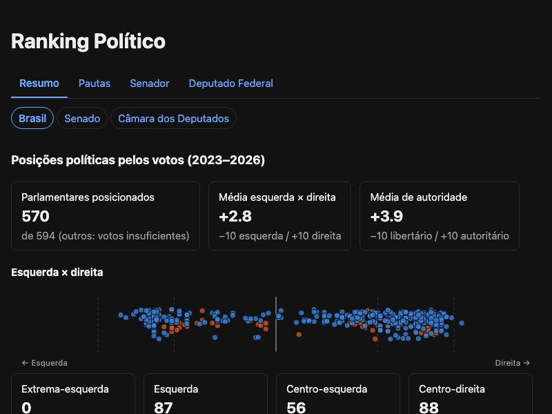
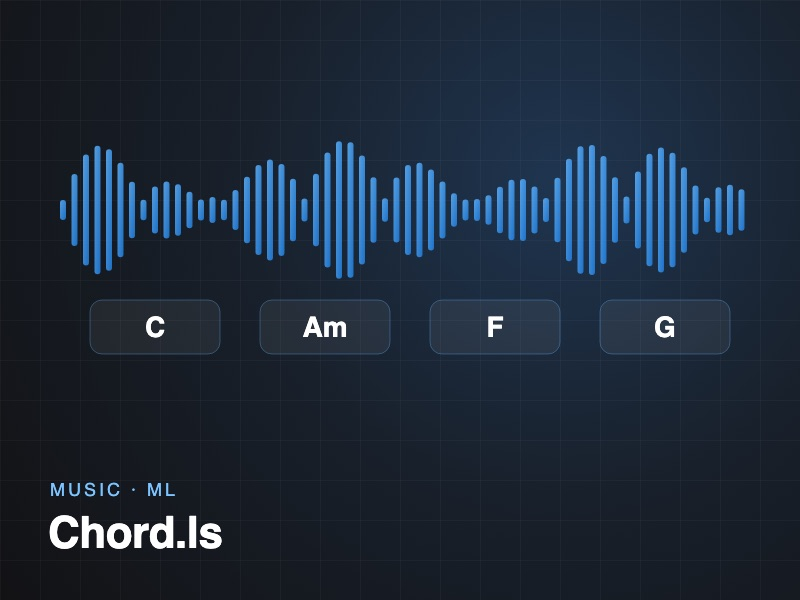
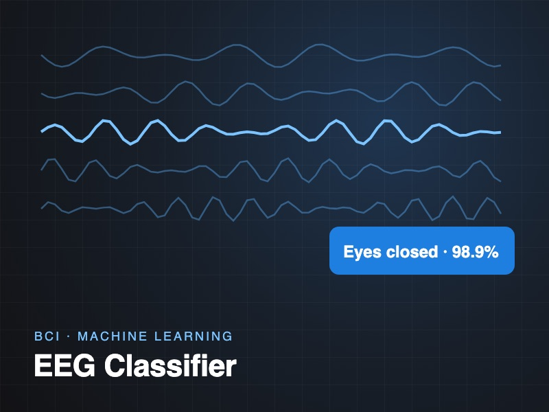
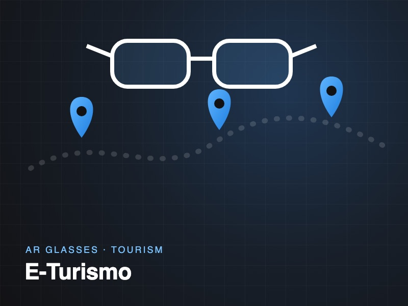

About
I'm a software engineer at Moises, where I build the systems behind growth and marketing: a real-time social media observability pipeline on Google Cloud, CRM automations that made the influencer team 60% more efficient, and a lead-scoring model that helped close 200+ contracts in a quarter.
I joined Moises by winning their chord-recognition challenge; that algorithm went on to ship in an app with 50M+ users. I hold a BS in Computer Science from UFPE, and outside work I like data journalism, augmented reality and brain-computer interfaces.
Experience
-
2022 — Present
Software Engineer · Moises
- Built a microservices social media observability pipeline (Python, Terraform, Cloud Run, Pub/Sub, BigQuery) with real-time metrics across platforms.
- Implemented CRM and automations (Salesforce, Apex, Apps Script, Python) that raised influencer-marketing efficiency by 60%+.
- Created a lead-scoring ML model (PyTorch, scraping) behind 200+ closed contracts in one quarter; maintain a 10K+ lead database.
- Set up GCP hosting and GitHub Actions continuous deployment for Flask-triggered CRM services.
-
2021 — 2022
Software Engineer Intern · Moises
Hired after placing 1st in a chord-recognition challenge. Kept improving the algorithm (Python, ML, music identification, React front-end) until it reached production in an app with 50M+ users.
-
2017 — 2022
PIBITI Researcher · UFPE
Researched and published on software requirements engineering for startups and IoT projects.
-
2017 — 2018
Junior Backend Engineer · Accenture
Built Bash automations for daily health checks of client projects; reviewed and documented legacy Java code.
-
Jan — Feb 2017
Summer Job Intern · CESAR
In six weeks, learned Android and shipped a real-time guided city tour for EPSON's Moverio AR glasses using OpenCV image recognition and GPS.
Projects
-

Ranking Político
Ranks Brazil's 594 senators and federal deputies using only official open data: attendance, votes, laws, committee work and expenses. Places each one on a 2D political map built from how they actually vote.
-

Chord.ls
Winning entry of the Moises.ai challenge: detects the chords at every timestamp of an audio file. Later adapted into production for 50M+ users.
-

EEG Mental State Classifier
Classifies mental states from EEG signals for brain-computer interfaces, with 98.86% accuracy on eye-state detection and an interactive dashboard.
-

E-Turismo
Guided tour of Recife for EPSON Moverio AR glasses: recognizes landmarks through the glasses' camera and tells their history.
-
AR Library
Android prototype that recognizes book covers in augmented reality and overlays information about the book.
Skills
Portuguese (native) · English (fluent) · Spanish, Italian (elementary)